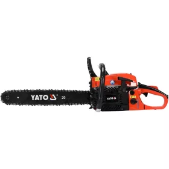

Boltunkba a legjobb minőségű, márkájú és árú
(MMA) szerszámok érkeznek, különböző országokból.
-Kalapácsok
-Csavarhúzók
-Készletek
-Elektromos szerszámok


Kalapácsok
FESTA ácskalapács üvegszál nyéllel
Ár: 3200Ft

YATO YT-4561 Ácskalapács
Ár: 3000Ft
YATO YT-4498 Kalapács
Ár: 2300Ft
YATO YT-4562 Kőműves kalapács
Ár: 2700Ft
YATO YT-4520 Bádogos kalapács
Ár: 2100Ft
Csavarhúzók
YATO YT-25930 Csavarhúzó
Ár: 900Ft
YATO YT-2822 Csavarhúzó
Ár: 870Ft

YATO YT-28174 Csavarhúzó
Ár: 820Ft
YATO YT-25992 Csavarhúzó üthető
Ár: 1250Ft
YATO YT-25961 Csavarhúzó
Ár: 2100Ft
Készletek
YATO YT-55480 Vízvezeték-szerelő szerszám készlet
Ár: 9750Ft
YATO YT-38951 Szerszámosláda
Ár: 34500Ft
YATO YT-0362 Csillag-villáskulcs készlet
Ár: 10200Ft
YATO YT-04211 Generátor javító készlet
Ár: 16500Ft
Készletek
YATO YT-82804 Akkus ütvecsavarozó
Ár: 38750Ft
Dnipro-M JS-65LX Dekopírfűrész
Ár: 22500Ft
YATO YT-84910 Benzines láncfűrész
Ár: 52200Ft
YATO YT-82207 Excenter csiszoló
Ár: 19500Ft